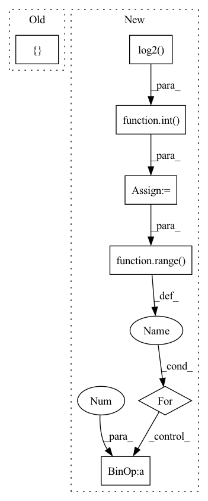

Pattern ID :943

Before Change
in_channels = self.config["style_encoder"]["filters"] * (2 ** (i - 1)) if i > 0 else 3
out_channels = 2 * in_channels if i > 0 else self.config["style_encoder"]["filters"]
layers += [
nn.Conv2d(in_channels, out_channels, kernel_size=4, stride=2, padding=1),
nn.LeakyReLU(negative_slope=0.2, inplace=True)
]
self.convs = nn.Sequential(*layers)
After Change
blocks = []
blocks += [nn.Conv2d(3, dim_in, 3, 1, 1)]
repeat_num = int(np.log2(img_size)) - 2
for _ in range(repeat_num):
dim_out = min(dim_in*2, max_conv_dim)
blocks += [ResBlk(dim_in, dim_out, downsample=True)]
dim_in = dim_out
In pattern: SUPERPATTERN
Frequency: 4
Non-data size: 7
Instances
Fragment ID: 3122271
Project Name: avivga/overlord
Commit Name: dffe3cb71a1c6c5500c019edf4a07d4443b84cd8
Time: 2020-05-19
Author: avivga@gmail.com
File Name: model/modules.py
M Class Name: StyleEncoder
N Class Name: StyleEncoder
M Method Name: __init__(3)
N Method Name: __init__(2)
M Parent Class: nn.Module
N Parent Class: nn.Module
M File Name: model/modules.py
N File Name: model/modules.py
M Start Line: 209
M End Line: 226
N Start Line: 130
N End Line: 155
'>
Before Change
in_channels = self.n_filters * (2 ** (i - 1)) if i > 0 else 3
out_channels = 2 * in_channels if i > 0 else self.n_filters
layers += [
nn.ReflectionPad2d(padding=1),
nn.Conv2d(in_channels, out_channels, kernel_size=4, stride=2),
nn.LeakyReLU(negative_slope=0.2, inplace=True)
]
layers += [
nn.Conv2d(in_channels=out_channels, out_channels=1, kernel_size=1, stride=1)
After Change
blocks = []
blocks += [nn.Conv2d(3, dim_in, 3, 1, 1)]
repeat_num = int(np.log2(img_size)) - 2
for _ in range(repeat_num):
dim_out = min(dim_in*2, max_conv_dim)
blocks += [ResBlk(dim_in, dim_out, downsample=True)]
dim_in = dim_out
'>
Fragment ID: 3122269
Project Name: avivga/overlord
Commit Name: fa020664bf0dcbd11e72953117146be2cdbc3b48
Time: 2020-05-29
Author: avivga@gmail.com
File Name: model/modules.py
M Class Name: Discriminator
N Class Name: Discriminator
M Method Name: __init__(3)
N Method Name: __init__(2)
M Parent Class: nn.Module
N Parent Class: nn.Module
M File Name: model/modules.py
N File Name: model/modules.py
M Start Line: 193
M End Line: 206
N Start Line: 81
N End Line: 103
'>
Before Change
super().__init__()
if stride == 4:
blocks = [
nn.Conv2d(in_channel, channel // 2, 4, stride=2, padding=1),
nn.ReLU(inplace=True),
nn.Conv2d(channel // 2, channel, 4, stride=2, padding=1),
nn.ReLU(inplace=True),
nn.Conv2d(channel, channel, 3, padding=1),
]
elif stride == 2:
After Change
super().__init__()
blocks = []
strides = int(math.log2(stride))
if strides == 0:
blocks.append(nn.Conv2d(in_channel, channel // 2, 3, padding=1))
blocks.append(nn.ReLU(inplace=True))
for i in range(strides):
// first stride
if i == 0:
blocks.append(nn.Conv2d(in_channel, channel // 2, 4, stride=2, padding=1))
// last stride
elif i + 1 == strides:
blocks.append(nn.Conv2d(channel // 2, channel, 4, stride=2, padding=1))
// middle stride
else:
blocks.append(nn.Conv2d(channel // 2, channel // 2, 4, stride=2, padding=1))
'>
Fragment ID: 3122268
Project Name: tgisaturday/dalle-lightning
Commit Name: 817777e19a455605c54f26d77165c705193384e0
Time: 2021-08-17
Author: j@doodlebot.ai
File Name: pl_dalle/models/vqvae2.py
M Class Name: Encoder
N Class Name: Encoder
M Method Name: __init__(6)
N Method Name: __init__(6)
M Parent Class: nn.Module
N Parent Class: nn.Module
M File Name: pl_dalle/models/vqvae2.py
N File Name: pl_dalle/models/vqvae2.py
M Start Line: 236
M End Line: 250
N Start Line: 238
N End Line: 262
'>
Before Change
in_channels = self.config["discriminator"]["filters"] * (2 ** (i - 1)) if i > 0 else 3
out_channels = 2 * in_channels if i > 0 else self.config["discriminator"]["filters"]
layers += [
nn.ReflectionPad2d(padding=1),
nn.Conv2d(in_channels, out_channels, kernel_size=4, stride=2),
nn.LeakyReLU(negative_slope=0.2, inplace=True)
]
layers += [
nn.Conv2d(in_channels=out_channels, out_channels=1, kernel_size=1, stride=1)
After Change
blocks = []
blocks += [nn.Conv2d(3, dim_in, 3, 1, 1)]
repeat_num = int(np.log2(img_size)) - 2
for _ in range(repeat_num):
dim_out = min(dim_in*2, max_conv_dim)
blocks += [ResBlk(dim_in, dim_out, downsample=True)]
dim_in = dim_out
'>
Fragment ID: 3122273
Project Name: avivga/overlord
Commit Name: dffe3cb71a1c6c5500c019edf4a07d4443b84cd8
Time: 2020-05-19
Author: avivga@gmail.com
File Name: model/modules.py
M Class Name: Discriminator
N Class Name: Discriminator
M Method Name: __init__(3)
N Method Name: __init__(2)
M Parent Class: nn.Module
N Parent Class: nn.Module
M File Name: model/modules.py
N File Name: model/modules.py
M Start Line: 166
M End Line: 179
N Start Line: 98
N End Line: 117